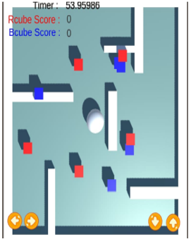

2D GAME : The Rolling Ball
For this project I decided to create a 2D game that I call ‘Rolling Ball’.
This project was inspired by Minecraft. I would often play the game as a child, it was
one of my absolute favourites. Playing my game, you may feel nostalgic as it has a
similar experience to its inspiration.
My game provides the user with up, down, left and right keys that the user must use
in order to move the ball around. The aim of the game is to collect as many red and
blue cubes as possible in the time provided. The counter at the top left counts the
number of red and blue cubes collected.
Goal Of The Work :
I displayed my love for my childhood game in this project. Minecraft was a large part of my
childhood so I was passionate creating this game.
I found Unity an easy enough tool to use. Creating the movements and the layout of the
game was no trouble at all.
Image associated with 2D Game

Alexa is the first fashion model up in today’s fashion show. The crowd goes wild and stares in awe as she sashays her way to the front of the stage slowing down ever so slightly before striking her most conspicuous pose.
She’s dressed in woman’s business casual but the confidence in her walk has everyone thinking she’s special and so are the clothes she wears. She smiles at this thought as she turns to walk back to the far end of the stage where the next model would be waiting for her return. Her boss would be very pleased with her today.
My project tells the story of this proudful moment in Alexa’s life in a visual, 3D form.
My inspiration for this project came to me from memories of past classmates (from when I was studying Masters of Computer Application) putting up a similar show back home. I find fashion shows fascinating because I enjoy the fact that so many people work so hard to give the models their time in the spotlight. I find it peculiar how a couple seconds’ walk can mean so much to a group of people. So I decided to display this vision of mine for my 3d project.